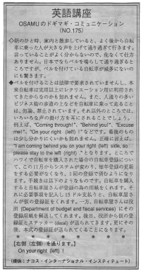

通ります。（改訂中）
Coming through! Behind you! In Hawaii, bicycles are not equipped with bells and bicyclists usually ride in the streets. Bicycles are allowed in residential areas normally but not business districts because there are too many people walking around. The only way to get a pedestrian's attention is by calling out to them. Then when they hear you, they will turn around and move.
朝のひと時、家内と散歩をしていると、よく後から自転車に乗った人が大きな声を上げて通り過ぎて行きます。言っていることがよく分からないので、危なくて仕方ありません。日本でならベルを鳴らして通り過ぎるところですが、ベルを付けている自転車が滅多にないのにも驚きます。
ベルを付けることは法律で要求されていませんし、本来、自転車は実用以上にレクレーション用に利用されてきたからなのかもしれません。また、人通りの多いビジネス街の歩道の上などを自転車に乗って走ることは、勿論、禁止されています。それ以外のところでは、いろいろな声の掛け方を耳にされることでしょう。例えば、 ¨Coming through!¨、 ¨Behind you!¨、 ¨Excuse me!¨ 、 ¨On your right (left)!¨などです。最後のものは少し分かりにくいかもしれません。正確に言えば、 ¨I am coming behind you on your right (left) side, so please stay to the left (right).¨ となります。 ところでハワイで自転車を購入された場合の自転車登録についてシステムが変わり、毎年登録の更新をする必要がなくなり、１回の登録で済むようになります。手続きは以下のようなものです。自転車を購入すると自転車屋さんが登録の為の用紙をくれます。それに必要事項を記入し１５ドル支払うと、自転車屋さんが仮の登録証をくれます。一方、自転車屋さんは役所(Department of budget and fiscal services)にその登録用紙を郵送してくれます。後日、役所から仮の登録証とステッカー(decal)が送られてきます。更にその後、本式の登録証が送られてくることになります。
右側（左側）を通ります。
On your right (left)!

| © 1995-2013 NACOS International Institute. All Rights Reserved. |